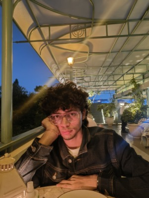

"What we think, we become." — Buddha
About Me
Vikram Aditya
I'm Vikram Aditya (Aditya Kumar ; 王阳明 - Wang Yangming). A Engineering graduate from IIT Bombay (Class of 2024), currently working in the Founder's Office at Teachmint in Bengaluru.
I'm also building Crushky — an AI-first dating app where you have one honest conversation with an AI matchmaker, and it finds the person who actually gets you. No swiping. No awkward openers.

Currently Building
Crushky — Talk to AI. Meet your person.
Unlike Hinge/Bumble where you swipe and repeat yourself to every match, on Crushky you have one conversation with an AI matchmaker. The AI learns who you actually are, finds your best match, and explains exactly why you two would work.
Building the MVP for investor demo. Tech stack: React, Tailwind CSS, Claude API.
Visit CrushkyEducation
IIT Bombay — B.Tech, Civil Engineering
IIT Bombay wasn't just college, it was a turning point in my life. Looking back, I'd say 90% of what I've learned about life, people, and myself came from these four years.
I dived into everything from civil engineering to entrepreneurship, law, and beyond. Held multiple positions of responsibility from Class Representative and Mentor to working with tech teams like Team Shunya and Team Rakshak, and eventually becoming the Department General Secretary. I did lot of intern, did research, built projects, and even got the chance to explore China.
I made lifelong friends, found coolest and most humble professors, and built memories I'll carry forever. IIT Bombay became my second home, not because of the campus, but because of the life it gave me.
So many stories, so many moments. Maybe one day, I'll write a book: "My 4 Years at IIT Bombay."
University of Cambridge — Research Apprenticeship
Interned at Cambridge Judge Business School, where I learned two truths: data never behaves and deadlines always do.
Tsinghua University — Global Summer Program
2nd Best Researcher Award · Received Pre-Admission Offer · Asian University Alliance
Explored Shenzhen: loved the city and people, learned dance & calligraphy, and somehow presented research I did in just 3 hours.
IIT Gandhinagar — Invention Factory
Team of 20 students from 13+ IITs · Goal: Prototype, Pitch and Patent
Learned how to think, how to draft patents, and how to present in front of an audience. Invented a self-sealing biomedical bin that lowered exposure to biomedical waste by around 60%.
Best Moments: Ate lots of ice cream and chocolates every day (free from the program!), had pizza parties, tried skating, learned how to play video games — and got addicted.
Worst Moments: Discovered I have major stage fright and realized I'm not as smart as I thought.
Patna Collegiate School
The only time I visited school in those two years was for exams. Studied just before each exam and somehow secured 1st rank in school.
Achievements
Invented a Mechanical Self-Sealing Biomedical bin (2021)
Among 0.2 million students (2020)
Among 1.2 million students (2020)
Asian University Alliance Overseas Program (2023)
IIT Bombay
G-20 Mumbai · Wharton India Economic Forum · Technology Vision 2047